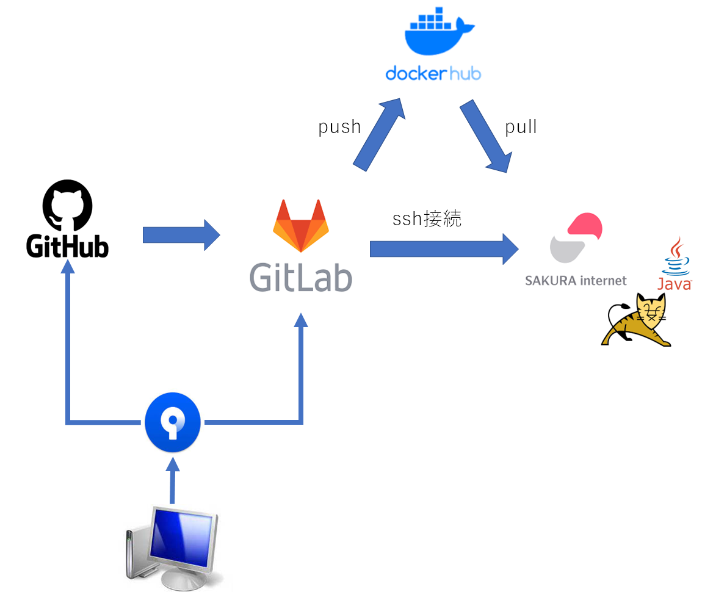

コンテナ化
Tweetタイトル考え中 > 自動リリース
自動リリース
新しく配属されたプロジェクトで Docker や GitLab で自動リリース機能構築(CD)など、これまで触れたことのない技術が大量にあったので、それらを使用することで少しでも早くその技術になれ、使いこなせるようになりたかった。
なので今後コンテナ化、GitLab で CD 機能を構築していくが、その前に cron から脱却し、各言語のスケジューラを使用することでコンテナ化したときの移植性を高めたい。
稼働時間を変えたいとか、新しく bot を作った時の稼働タイミングの設定を各アプリで行うことで、ローカルで設定したものを GitLab に push してしまえば後は勝手にリリースされて時間になったら bot が稼働するという状態を目指したい。
作ったもの（実際に稼働したときのツイート）
内容は対応前後で変化なし。
どんな仕組み？

GitHub を GitLab に移植するのが面倒なので今はこうなってる。
.gitlab-ci.yml(Go)
.gitlab-ci.yml(python)
.gitlab-ci.yml(Java)
ぶつかった壁とか学んだこととか
python のbot を詰め込んだ Docker が起動しない
発生したエラー
standard_init_linux.go:228: exec user process caused: no such file or directory
アーキテクチャーの違い。python で pyinstaller を使って軽量なコンテナイメージを作ろうとした際、最初は Alpine を使おうとしていた（コンテナ化したのは Go が先で Go は Alpine を使っていたから）。
コンテナに乗せる前に python のコードを build する必要があるが、 python が入っていないと build できないため、 GitLab のパイプラインで使用するイメージは python:3.10 を使って、出来上がった成果物を alpine で動かそうとしていた。
python:3.10 は debian系統なので、そこで生成した成果物を Alpine で動かそうとしても動かない。
python:
パイプライン自体は割とすんなり動いたけど一つ一つのコマンドの理解が追い付いていない部分があるので後日ちゃんと追いたい
python